Author：拉轰的二哈 Date：2018.06.08
一. 前言：
-
作为AI入门小白，参考了一些文章，想记点笔记加深印象，发出来是给有需求的童鞋学习共勉，大神轻拍！
-
【毒鸡汤】：算法这东西，读完之后的状态多半是 --> “我是谁，我在哪？” 没事的，吭哧吭哧学总能学会，毕竟还有千千万万个算法等着你。
-
本文货很干，堪比沙哈拉大沙漠，自己挑的文章，含着泪也要读完！
二. 科普：
-
生物上的神经元就是接收四面八方的刺激
（输入），然后做出反应（输出），给它一点☀️就灿烂。 -
仿生嘛，于是喜欢放飞自我的 某些人 就提出了人工神经网络。一切的基础-->人工神经单元，看图：
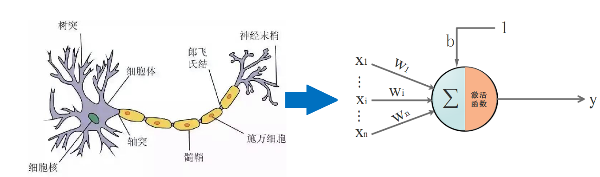
三. 通往沙漠的入口: 神经元是什么，有什么用：
开始前，需要搞清楚一个很重要的问题：人工神经网络里的神经元是什么，有什么用。只有弄清楚这个问题，你才知道你在哪里，在做什么，要往哪里去。
首先，回顾一下神经元的结构，看下图, 我们先忽略激活函数不管：
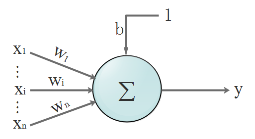
- 输入：
x1,x2,...,xn(3.1) - 输出：
y(3.2) - 输入和输出的关系
（函数）：
y =(xi∗w1+x2∗w2+...+xn∗wn)+b=∑i=1nxi∗wi+b (3.3)其中，wi,i=1, n为权重（weight），待会就知道这货是什么了
没错，开始晒公式了！我们的数据都是离散的，为了看得更清楚点，所以换个表达方式，把离散的数据写成向量。该不会忘了向量是啥吧？回头致电问候一下当年的体育老师！
-
改写输入：
x=[x1,x2,...,xn]T(3.4)加T转置后，x相当于一个n行1列的矩阵 -
改写权重:
w=[w1,w2,...,wn](3.5) -
那么输出就写成了：
y =[w1,w2,...,wn]∙[x1,x2,...,xn]T+b=wx+b这是什么，我们换个字母，把 w 换成 k，可以看到 w 就是直线的斜率啊啊啊:=kx+b (3.6)
现在回答问题刚才的问题：
一个神经元是什么：
参照式（1.6），从函数图像角度看，这就是一根直线。一个神经元有什么用：要说明用途就要给出一个应用场景：分类。一个神经元就是一条直线，相当于楚河汉界，可以把红棋绿棋分隔开，此时它就是个分类器。所以，在线性场景下，单个神经元能达到分类的作用，它总能学习到一条合适的直线，将两类元素区分出来。
先睹为快，看效果图，自己可以去玩：传送门
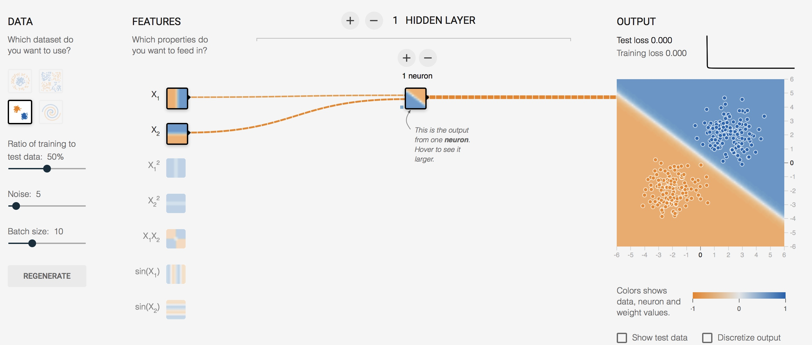
对上面的图简单说明一下:
- (x1,x2) 对于神经元的输入都是 x, 而对我们而言，这数据就是意义上的点的坐标，我们习惯写成 (x,y)。
又要划重点了：
我们需要对神经元的输出做判定，那么就需要有判定规则，通过判定规则后我们才能拿到我们想要的结果，这个规则就是：
假设，0代表红点，1代表蓝点（这些数据都是事先标定好的，在监督学习下，神经元会知道点是什么颜色并以这个已知结果作为标杆进行学习）
当神经元输出小于等于 0 时，最终结果输出为 0，这是个红点
当神经元输出大于 1 时，最终结果输出为 1，这是个蓝点
上面提到的规则让我闻到了激活函数的味道！
（这里只是线性场景，虽然不合适，但是简单起见，使用了单位阶跃函数来描述激活函数的功能）当 x<=0 时，y = 0; 当 x > 0 时，y = 1这是阶跃函数的长相：
此时神经元的长相：
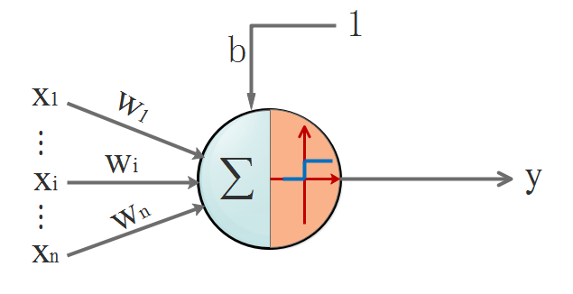

四. 茫茫大漠第一步: 激活函数是什么，有什么用
从上面的例子，其实已经说明了激活函数的作用；但是，我们通常面临的问题，不是简单的线性问题，不能用单位阶跃函数作为激活函数，原因是：
阶跃函数在x=0时不连续，即不可导，在非0处导数为0。用人话说就是它具备输出限定在[0-1]，但是它不具备丝滑的特性，这个特性很重要。并且在非0处导数为0，也就是硬饱和，压根儿就没梯度可言，梯度也很重要，梯度意味着在神经元传播间是有反应的，而不是“死”了的。
接下来说明下，激活函数所具备的特性有什么，只挑重要的几点特性讲：
-
非线性: 即导数不是常数,不然就退化成直线。对于一些画一条直线仍然无法分开的问题，非线性可以把直线掰弯，自从变弯以后，就能包罗万象了。
-
几乎处处可导：也就是具备“丝滑的特性”，不要应激过度，要做正常人。数学上，处处可导为后面降到的后向传播算法（BP算法）提供了核心条件
-
输出范围有限：一般是限定在[0,1]，有限的输出范围使得神经元对于一些比较大的输入也会比较稳定。
-
非饱和性：饱和就是指，当输入比较大的时候，输出几乎没变化了，那么会导致梯度消失！什么是梯度消失：就是你天天给女生送花，一开始妹纸还惊喜，到后来直接麻木没反应了。梯度消失带来的负面影响就是会限制了神经网络表达能力，词穷的感觉你有过么。sigmod，tanh函数都是软饱和的，阶跃函数是硬饱和。软是指输入趋于无穷大的时候输出无限接近上线，硬是指像阶跃函数那样，输入非0输出就已经始终都是上限值。数学表示我就懒得写了，传送门在此,里面有写到。如果激活函数是饱和的，带来的缺陷就是系统迭代更新变慢，系统收敛就慢，当然这是可以有办法弥补的，一种方法是使用交叉熵函数作为损失函数，这里不多说。ReLU是非饱和的，亲测效果挺不错，所以这货最近挺火的。
-
单调性：即导数符号不变。导出要么一直大于0，要么一直小于0，不要上蹿下跳。导数符号不变，让神经网络训练容易收敛。
这里只说我们用到的激活函数：
Sigmoid函数:y =1e−x+1(4.1) 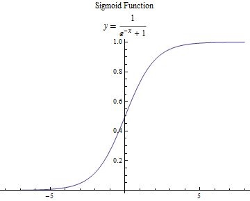
求一下它的导数把，因为后面讲bp算法会直接套用它：
先祭出大杀器，高中数学之复合函数求导法则：
法则1:[u(x) ± v(x)]′=u′(x) ± v′(x)(4.2)法则2:[u(x) ∗ v(x)]′=u′(x)∗v(x) + u(x)∗v′(x)∗v(x)(4.3)法则3:⟮uv⟯′=u′v−uv′v2(4.4) 开始算算：
y′ =(1e−x+1)′=⟮uv⟯′(这里定：u=1,v=e−x+1)=u′v−uv′v2=1′∗(e−x+1)−1∗(e−x+1)′(e−x+1)2(1是常数，导数是0; 法则1: (e−x+1)′=(e−x)′+1′=(e−x)′复合函数求导=−e−x)=e−x(e−x+1)2=11+e−x∗e−x1+e−x=11+e−x∗1+e−x−11+e−x=11+e−x∗(1−11+e−x), 因为：y =1e−x+1，所以有:=y∗(1−y)(4.5) 它的导数图像：
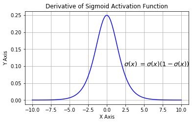
五. 沙漠中心的风暴：BP(Back Propagation)算法
1. 神经网络的结构
经过上面的介绍，单个神经元不足以让人心动，唯有组成网络。神经网络是一种分层结构，一般由输入曾，隐藏层，输出层组成。所以神经网络至少有3层，隐藏层多于1，总层数大于3的就是我们所说的深度学习了。
-
输入层：就是接收原始数据，然后往隐层送
-
输出层：神经网络的决策输出
-
隐藏层：该层可以说是神经网络的关键，相当于对数据做一次特征提取。隐藏层的意义，是把前一层的向量变成新的向量。就是坐标变换，说人话就是把数据做平移，旋转，伸缩，扭曲，让数据变得线性可分。可能这个不那么好理解，举个栗子：
下面的图左侧是原始数据，中间很多绿点，外围是很多红点，如果你是神经网络，你会怎么做呢？
一种做法：把左图的平面看成一块布，把它缝合成一个闭合的包包（相当于数据变换到了一个3维坐标空间），然后把有绿色点的部分撸到顶部（伸缩和扭曲），然后外围的红色点自然在另一端了，要是姿势还不够帅，就挪挪位置（平移）。这时候干脆利落的砍一刀，绿点红点就彻底区分开了。重要的东西再说一遍：神经网络换着坐标空间玩数据，根据需要，可降维，可升维，可大，可小，可圆可扁，就是这么“无敌”这个也可以自己去玩玩，直观的感受一下：传送门
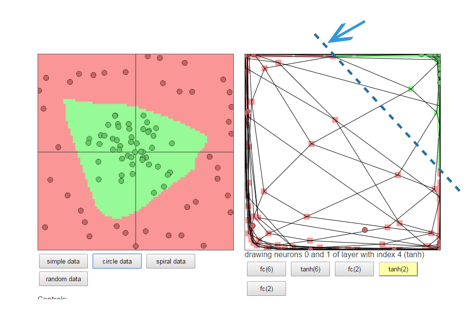
2.正反向传播过程
看图，这是一个典型的三层神经网络结构，第一层是输入层，第二层是隐藏层，第三层是输出层。PS:不同的应用场景，神经网络的结构要有针对性的设计，这里仅仅是为了推导算法和计算方便才采用这个简单的结构
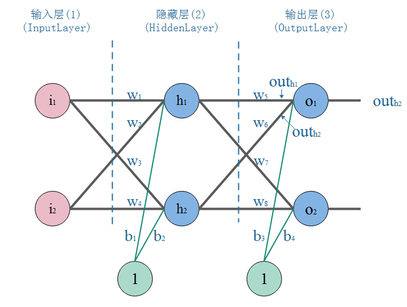
我们以战士打靶，目标是训练战士能命中靶心成为神枪手作为场景：
那么我们手里有这样一些数据：一堆枪摆放的位置(x,y)，以及射击结果，命中靶心和不命中靶心。
我们的目标是：训练出一个神经网络模型，输入一个点的坐标（射击姿势），它就告诉你这个点是什么结果（是否命中）。
我们的方法是：训练一个能根据误差不断自我调整的模型，训练模型的步骤是：
-
正向传播：把点的坐标数据输入神经网络，然后开始一层一层的传播下去，直到输出层输出结果。
-
反向传播(BP)：就好比战士去靶场打靶，枪的摆放位置（输入），和靶心🎯（期望的输出）是已知。战士（神经网络）一开始的时候是这样做的，随便开一枪（w，b参数初始化称随机值），观察结果（这时候相当于进行了一次正向传播）。然后发现，偏离靶心左边，应该往右点儿打。所以战士开始根据偏离靶心的距离（误差，也称损失）调整了射击方向往右一点（这时，完成了一次反向传播）
-
当完成了一次正反向传播，也就完成了一次神经网络的训练迭代，反复调整射击角度（反复迭代），误差越来越小，战士打得越来越准，神枪手模型也就诞生了。
3.BP算法推导和计算
-
参数初始化：
-
正向传播：
1.输入层-->隐层：
-
计算隐层神经元 h1 的输入加权和:
inh1=w1∗i1+w2∗i2+1∗b1(5.1)=0.1∗0.1+0.2∗0.2+1∗0.55=0.6 -
计算隐层神经元 h1 的输出,需要通过激活函数Sigmoid，记得吧？:
outh1=1e−inh1+1(5.2)=1e−0.6+1=0.6456563062 -
同理，可以算出隐层神经元 h2 的输出：
outh2=0.6592603884
2.隐层-->输出层：
-
计算输出层神经元O1的输入加权和：
inO1=w5∗outh1+w6∗outh2+1∗b3(5.3)=0.5∗0.6456563062+0.6∗0.6592603884+1∗0.66=1.3783843861 -
计算隐层神经元O1的输出:
outO1=1e−inO1+1(5.4)=1e−1.3783843861+1=0.7987314002 -
同理，可以算出隐层神经元O2的输出：
outO2=0.8374488853
正向传播结束，我们看看输出层的输出结果：[0.7987314002, 0.8374488853]，但是我们希望它能输出[0.01, 0.99]，所以明显的差太远了，这个时候我们就需要利用反向传播，更新权值w，然后重新计算输出
-
-
反向传播：
1.计算输出误差：
Etotal=∑i=12EoutOi(5.5)=EoutO1+EoutO2=12（expectedout1−outO1）2+12（expectedout2−outO2）2=12（O1−outO1）2+12（O2−outO2）2=12∗（0.01−0.7987314002）2+12∗（0.99−0.8374488853）2=0.0116359213+0.3110486109=0.3226845322其中：EoutO1=0.0116359213,EoutO2=0.3110486109
PS: 这里我要说的是，用这个作为误差的计算，因为它简单，实际上用的时候效果不咋滴。【原因上文我提过了】：
我在第四章节说激活函数作用时，提到激活函数应具备“非饱和性”。如果激活函数是饱和的，带来的缺陷就是系统迭代更新变慢，系统收敛就慢，当然这是可以有办法弥补的，一种方法是使用交叉熵函数作为损失函数。交叉熵做为代价函数能达到上面说的优化系统收敛下欧工，是因为它在计算误差对输入的梯度时，抵消掉了激活函数的导数项，从而避免了因为激活函数的“饱和性”给系统带来的负面影响。如果项了解更详细的证明可以点 --> 传送门
Etotal=1m∑i=1m(O⋅log outO+(1−O)⋅log(1−outO))
对输出的偏导数：
∂Etotal∂outO=1m∑i=1m(OoutO−1−O1−outO)
2.隐层-->输出层的权值及偏置b的更新：
-
先放出链式求导法则：
假设y是u的函数，而u是x的函数: y=f(u), u=g(x)那么对应的复合函数就是：y=f(g(x))那么y对x的导数则有：dydx=dydu⋅dudx -
以更新w5举例：
我们知道，权重w的大小能直接影响输出，w不合适那么会使得输出误差。要想直到某一个w值对误差影响的程度，可以用误差对该w的变化率来表达。如果w的一点点变动，就会导致误差增大很多，说明这个w对误差影响的程度就更大，也就是说，误差对该w的变化率越高。而误差对w的变化率就是误差对w的偏导。所以，看下图，总误差的大小首先受输出层神经元O1的输出影响，继续反推，O1的输出受它自己的输入的影响，而它自己的输入会受到w5的影响。这就是连锁反应，从结果找根因。
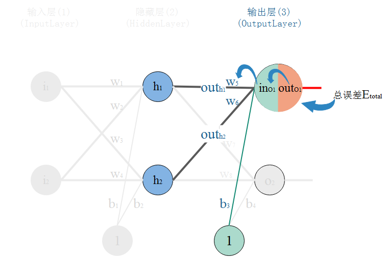
那么，根据链式法则则有：
∂Etotal∂w5=∂Etotal∂outO1⋅∂outO1∂inO1⋅∂inO1∂w5(5.6) 现在挨个计算：
因为：Etotal=12（O1−outO1)2+12(O2−outO2）2则有：∂Etotal∂outO1=∂（12（O1−outO1）2+12（O2−outO2）2）∂outO1(5.7)=2∗12（O1−outO1）2−1∗（0−1）+0=−（O1−outO1）(5.8)=−（0.01−0.7987314002）=0.7887314002
激活函数的导数看公式（4.5）：
outO1∂outO1∂inO1=1e−inO1+1 (5.8)=∂（1e−inO1+1）∂inO1=outO1（1−outO1）(5.9)=0.7987314002∗（1−0.7987314002）=0.1607595505
inO1∂inO1∂w5=w5∗outh1+w6∗outh2+1∗b3 (5.10)=∂（w5∗outh1+w6∗outh2+1∗b3）∂w5(5.11)=1∗w(1−1)5∗outh1+0+0=outh1=0.6456563062
所以：
∂Etotal∂w5=∂Etotal∂outO1⋅∂outO1∂inO1⋅∂inO1∂w5(5.12)=0.7887314002∗0.1607595505∗0.6456563062=0.0818667051
我们归纳一下式子：
∂Etotal∂w5=∂Etotal∂outO1⋅∂outO1∂inO1⋅∂inO1∂w5=−(O1−outO1)⋅outO1⋅(1−outO1)⋅outh1(5.13)=σO1⋅outh1其中，σO1=−(O1−outO1)⋅outO1⋅(1−outO1)
同理，更新输出层偏置b如下：
inO1∂inO1∂b3=w5∗outh1+w6∗outh2+1∗b3=∂（w5∗outh1+w6∗outh2+1∗b3）∂b3(5.14)=0+0+b(1−1)3=1 ∂Etotal∂b3=∂Etotal∂outO1⋅∂outO1∂inO1⋅∂inO1∂b3=−(O1−outO1)⋅outO1⋅(1−outO1)⋅1(5.15)=σO1其中，σO1=−(O1−outO1)⋅outO1⋅(1−outO1)
有个学习率的东西，学习率取个0.5。关于学习率，不能过高也不能过低。因为训练神经网络系统的过程，就是通过不断的迭代，找到让系统输出误差最小的参数的过程。每一次迭代都经过反向传播进行梯度下降，然而误差空间不是一个滑梯，一降到底，常规情况下就像坑洼的山地。学习率太小，那就很容易陷入局部最优，就是你认为的最低点并不是整个空间的最低点。如果学习率太高，那系统可能难以收敛，会在一个地方上串下跳，无法对准目标（目标是指误差空间的最低点），可以看图：
xy轴是权值w平面，z轴是输出总误差。整个误差曲面可以看到两个明显的低点，显然右边最低，属于全局最优。而左边的是次低，从局部范围看，属于局部最优。而图中，在给定初始点的情况下，标出的两条抵达低点的路线，已经是很理想情况的梯度下降路径。
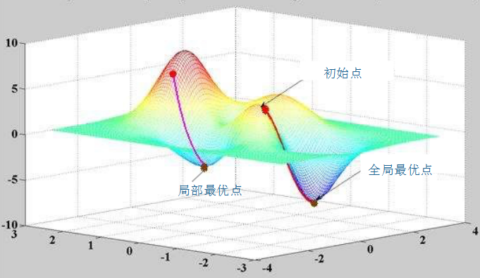
现在可以更新w5的值了,就设定学习率为0.5吧：
w+5=w5−α⋅∂Etotal∂w5(5.16)=0.5−0.5∗0.0818667051=0.45906664745 归纳一下输出层w更新的公式：
w+O=wO−α⋅(−outO⋅(1−outO)⋅(O−outO)⋅outh)=wO+α⋅(O−outO)⋅outO⋅(1−outO)⋅outh(5.17) 同理可以计算出w6，w7，w8的更新值，懒癌晚期，懒得算了...
w+6=...w+7=...w+8=...
同理更新偏置b：
b+=bO−α⋅∂Etotal∂bO(5.18) 归纳一下输出层w更新的公式：
b+O=bO−α⋅(−outO⋅(1−outO)⋅(O−outO))=bO+α⋅(O−outO)⋅outO⋅(1−outO)(5.19)
3.输入层-->隐层的权值及偏置b更新：
-
以更新w1为例：
仔细观察，我们在求w5的更新，误差反向传递路径输出层-->隐层，即out(O1)-->in(O1)-->w5，总误差只有一根线能传回来。但是求w1时，误差反向传递路径是隐藏层-->输入层，但是隐藏层的神经元是有2根线的，所以总误差沿着2个路径回来，也就是说，计算偏导时，要分开来算。看图：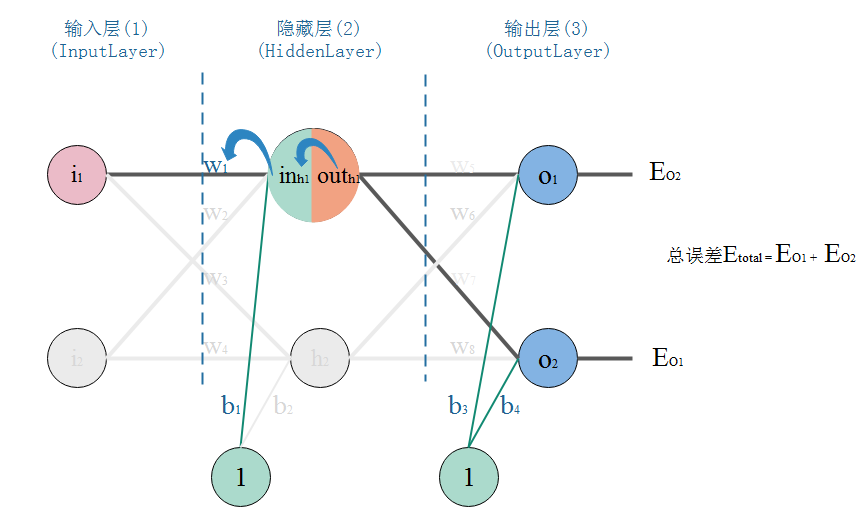
那么，现在开始算总误差对w1的偏导：
∂Etotal∂w1=∂Etotal∂outh1⋅∂outh1∂inh1⋅∂inh1∂w1(5.20)=(∂EO1∂outh1+∂EO2∂outh1)⋅∂outh1∂inh1⋅∂inh1∂w1(5.21)
3.1现在先算：
∂Etotal∂outh1
也就是：
∂Etotal∂outh1=∂EO1∂outh1+∂EO2∂outh1(5.22) 挨个算：
∂EO1∂outh1=∂EO1∂inO1⋅∂inO1∂outh1(5.23)
- 计算左边部分，参考式子(5.7), (5.8), (5.9)：
∂EO1∂inO1=∂EO1∂outO1⋅∂outO1∂inO1(5.24)=∂（12（O1−outO1）2∂outO1⋅∂outO1∂inO1=−（O1−outO1）⋅∂outO1∂inO1=0.7987314002∗0.1607595505=0.1284037009
- 计算右边部分：
inO1=w5∗outh1+w6∗outh2+1∗b3
∂inO1∂outh1=∂(w5∗outh1+w6∗outh2+1∗b3)∂outh1=w5∗out(1−1)h1+0+0=w5(5.25)=0.5
所以：
∂EO1∂outh1=∂EO1∂inO1⋅∂inO1∂outh1(5.26)=0.1284037009∗0.5=0.06420185045
同理～同理～：
∂EO2∂outh1=∂EO2∂inO2⋅∂inO2∂outh1=−（O2−outO2）⋅∂outO2∂inO2⋅∂inO2∂outh1=−（O2−outO2）⋅outO2（1−outO2）⋅w7(5.27)=−(0.99−0.8374488853)∗0.8374488853∗(1−0.8374488853)∗0.7=−0.0145365614
所以(3.19)的值为：
∂Etotal∂outh1=∂EO1∂outh1+∂EO2∂outh1=0.06420185045+(−0.0145365614)=0.04966528905
3.2 然后算：
∂outh1∂inh1
∵outh1∴∂outh1∂inh1=1e−inh1+1=∂（1e−inh1+1）∂inh1=outh1（1−outh1）=0.6456563062∗（1−0.6456563062）=0.2287842405
3.3 最后算：
∂inh1∂w1=∂(w1∗i1+w2∗i2+1∗b)∂w1=w(1−1)1∗i1+0+0=i1=0.1
最后，将3者相乘，就算出：
∂Etotal∂w1=∂Etotal∂outh1⋅∂outh1∂inh1⋅∂inh1∂w1=0.04966528905∗0.2287842405∗0.1=0.0011362635 我们归纳一下式子：
∂Etotal∂w1=∂Etotal∂outh1⋅∂outh1∂inh1⋅∂inh1∂w1=(∂EO1∂outh1+∂EO2∂outh1)⋅∂outh1∂inh1⋅∂inh1∂w1=(∑O∂EO∂outO⋅∂outO∂inO⋅∂inO∂outh)⋅∂outh1∂inh1⋅∂inh1∂w1=(∑OσOwO)⋅outh1(1−outh1)⋅i1(5.28)=σh1⋅i1其中，σh1=(∑OσOwO)⋅outh1(1−outh1)σO看作输出层的误差量，然后该误差量和w相乘，相当于通过w以传播了过来；如果是深层网络，隐藏层数量>1,那么公式中的 σO 写成 σh ，wO 写成 wh
现在，可以更新w1的值了：
w+1=w1−α⋅∂Etotal∂w1(5.29)=0.1−0.1∗0.0011362635=0.0998863737 归纳一下，隐藏层w更新的公式：
w+h=wh−α⋅∂Etotal∂w=wh+α⋅(−∑OσOwO)⋅outh(1−outh)⋅i(5.30) 如果隐藏层数量 > 1:
w+h=wh−α⋅∂Etotal∂wh=wh+α⋅(−∑hhσhhwhh)⋅outh(1−outh)⋅inh(5.31)hh代表当前隐藏层的下一个隐藏层，有点拗口；深层网络，计算的式子就是递归计算的了。 同理可以计算出w2，w3，w4的更新值，懒...
w+2=...w+3=...w+4=...
同理，隐藏层偏置b的更新：
∂Etotal∂bh=(∑hσhwh)⋅outh(1−outh)(5.32) b+h=bh−α⋅∂Etotal∂bh=wh+α⋅(−∑hσhwh)⋅outh(1−outh)(5.33)
如果隐藏层数量 > 1:
b+h=bh−α⋅∂Etotal∂bh=bh+α⋅(−∑hhσhhwhh)⋅outh(1−outh)(5.34)同上 hh 代表当前隐藏层的下一个隐藏层。
- 计算左边部分，参考式子(5.7), (5.8), (5.9)：
4.结论：
我们通过亲力亲为的计算，走过了正向传播，也体会了反向传播，完成了一次训练(迭代)。随着迭代加深，输出层的误差会越来越小，专业点说就是系统趋于收敛。来一张系统误差随迭代次数变化的图来表明我刚才说描述：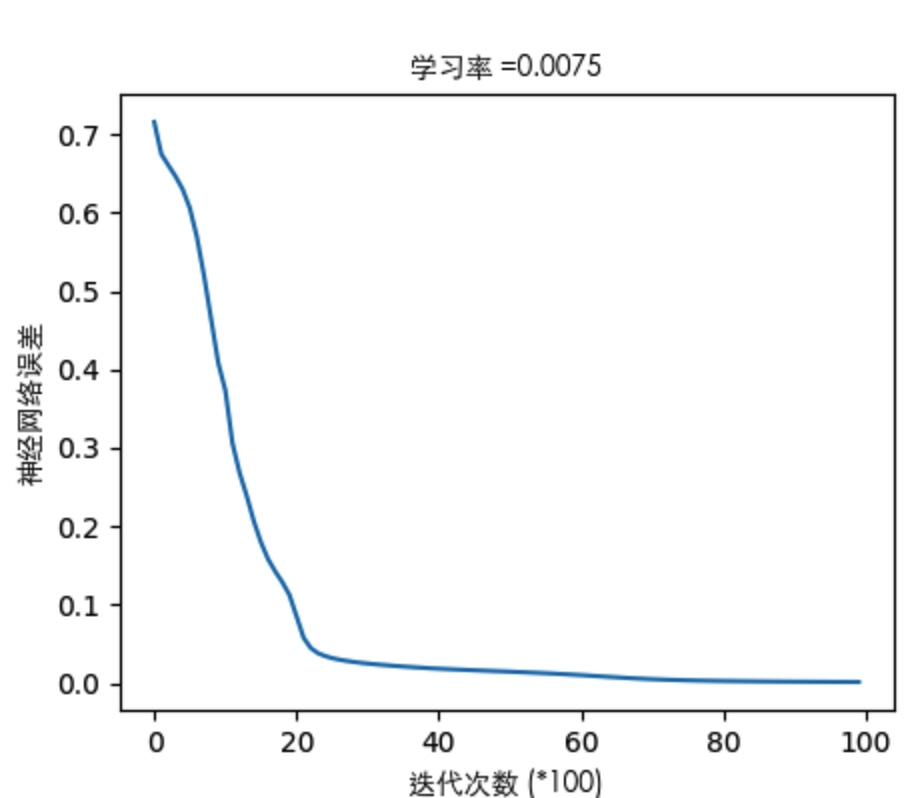
-
六. 沙漠的绿洲：代码实现
1. 代码代码！
其实已经有很多机器学习的框架可以很简单的实现神经网络。但是我们的目标是：在看懂算法之后，我们是否能照着算法的整个过程，去实现一遍，可以加深对算法原理的理解，以及对算法实现思路的的理解。顺便说打个call，numpy这个库，你值得拥有！
-
代码实现如下。代码里已经做了尽量啰嗦的注释，关键实现的地方对标了公式的编号，如果看的不明白的地方多回来啃一下算法推导。对应代码也传到了github上。
-
代码能自己定义神经网络的结构，支持深度网络。代码实现了对红蓝颜色的点做分类的模型训练，通过3层网络结构，改变隐藏层的神经元个数，通过图形显示隐藏层神经元数量对问题的解释能力。
-
代码中还实现了不同激活函数。隐藏层可以根据需要换着激活函数玩，输出层一般就用sigmoid，当然想换也随你喜欢～
#coding:utf-8import h5pyimport sklearn.datasetsimport sklearn.linear_modelimport matplotlibimport matplotlib.font_manager as fmimport matplotlib.pyplot as pltimport numpy as npnp.random.seed(1)font = fm.FontProperties(fname='/System/Library/Fonts/STHeiti Light.ttc')matplotlib.rcParams['figure.figsize'] = (10.0, 8.0)def sigmoid(input_sum):"""函数：激活函数Sigmoid输入：input_sum: 输入，即神经元的加权和返回：output: 激活后的输出input_sum: 把输入缓存起来返回"""output = 1.0/(1+np.exp(-input_sum))return output, input_sumdef sigmoid_back_propagation(derror_wrt_output, input_sum):"""函数：误差关于神经元输入的偏导: dE／dIn = dE/dOut * dOut/dIn 参照式（5.6）其中： dOut/dIn 就是激活函数的导数 dy=y(1 - y)，见式（5.9）dE/dOut 误差对神经元输出的偏导，见式（5.8）输入：derror_wrt_output：误差关于神经元输出的偏导: dE/dyⱼ = 1/2(d(expect_to_output - output)**2/doutput) = -(expect_to_output - output)input_sum: 输入加权和返回：derror_wrt_dinputs: 误差关于输入的偏导，见式（5.13）"""output = 1.0/(1 + np.exp(- input_sum))doutput_wrt_dinput = output * (1 - output)derror_wrt_dinput = derror_wrt_output * doutput_wrt_dinputreturn derror_wrt_dinputdef relu(input_sum):"""函数：激活函数ReLU输入：input_sum: 输入，即神经元的加权和返回：outputs: 激活后的输出input_sum: 把输入缓存起来返回"""output = np.maximum(0, input_sum)return output, input_sumdef relu_back_propagation(derror_wrt_output, input_sum):"""函数：误差关于神经元输入的偏导: dE／dIn = dE/dOut * dOut/dIn其中： dOut/dIn 就是激活函数的导数dE/dOut 误差对神经元输出的偏导输入：derror_wrt_output：误差关于神经元输出的偏导input_sum: 输入加权和返回：derror_wrt_dinputs: 误差关于输入的偏导"""derror_wrt_dinputs = np.array(derror_wrt_output, copy=True)derror_wrt_dinputs[input_sum <= 0] = 0return derror_wrt_dinputsdef tanh(input_sum):"""函数：激活函数 tanh输入：input_sum: 输入，即神经元的加权和返回：output: 激活后的输出input_sum: 把输入缓存起来返回"""output = np.tanh(input_sum)return output, input_sumdef tanh_back_propagation(derror_wrt_output, input_sum):"""函数：误差关于神经元输入的偏导: dE／dIn = dE/dOut * dOut/dIn其中： dOut/dIn 就是激活函数的导数 tanh'(x) = 1 - x²dE/dOut 误差对神经元输出的偏导输入：derror_wrt_output：误差关于神经元输出的偏导: dE/dyⱼ = 1/2(d(expect_to_output - output)**2/doutput) = -(expect_to_output - output)input_sum: 输入加权和返回：derror_wrt_dinputs: 误差关于输入的偏导"""output = np.tanh(input_sum)doutput_wrt_dinput = 1 - np.power(output, 2)derror_wrt_dinput = derror_wrt_output * doutput_wrt_dinputreturn derror_wrt_dinputdef activated(activation_choose, input):"""把正向激活包装一下"""if activation_choose == "sigmoid":return sigmoid(input)elif activation_choose == "relu":return relu(input)elif activation_choose == "tanh":return tanh(input)return sigmoid(input)def activated_back_propagation(activation_choose, derror_wrt_output, output):"""包装反向激活传播"""if activation_choose == "sigmoid":return sigmoid_back_propagation(derror_wrt_output, output)elif activation_choose == "relu":return relu_back_propagation(derror_wrt_output, output)elif activation_choose == "tanh":return tanh_back_propagation(derror_wrt_output, output)return sigmoid_back_propagation(derror_wrt_output, output)class NeuralNetwork:def __init__(self, layers_strcuture, print_cost = False):self.layers_strcuture = layers_strcutureself.layers_num = len(layers_strcuture)# 除掉输入层的网络层数，因为其他层才是真正的神经元层self.param_layers_num = self.layers_num - 1self.learning_rate = 0.0618self.num_iterations = 2000self.x = Noneself.y = Noneself.w = dict()self.b = dict()self.costs = []self.print_cost = print_costself.init_w_and_b()def set_learning_rate(self, learning_rate):"""设置学习率"""self.learning_rate = learning_ratedef set_num_iterations(self, num_iterations):"""设置迭代次数"""self.num_iterations = num_iterationsdef set_xy(self, input, expected_output):"""设置神经网络的输入和期望的输出"""self.x = inputself.y = expected_outputdef init_w_and_b(self):"""函数:初始化神经网络所有参数输入:layers_strcuture: 神经网络的结构，例如[2,4,3,1]，4层结构:第0层输入层接收2个数据，第1层隐藏层4个神经元，第2层隐藏层3个神经元，第3层输出层1个神经元返回: 神经网络各层参数的索引表，用来定位权值 wᵢ 和偏置 bᵢ，i为网络层编号"""np.random.seed(3)# 当前神经元层的权值为 n_i x n_(i-1)的矩阵，i为网络层编号，n为下标i代表的网络层的节点个数# 例如[2,4,3,1]，4层结构：第0层输入层为2，那么第1层隐藏层神经元个数为4# 那么第1层的权值w是一个 4x2 的矩阵，如：# w1 = array([ [-0.96927756, -0.59273074],# [ 0.58227367, 0.45993021],# [-0.02270222, 0.13577601],# [-0.07912066, -1.49802751] ])# 当前层的偏置一般给0就行，偏置是个1xnᵢ的矩阵，nᵢ为第i层的节点个数，例如第1层为4个节点，那么：# b1 = array([ 0., 0., 0., 0.])for l in range(1, self.layers_num):self.w["w" + str(l)] = np.random.randn(self.layers_strcuture[l], self.layers_strcuture[l-1])/np.sqrt(self.layers_strcuture[l-1])self.b["b" + str(l)] = np.zeros((self.layers_strcuture[l], 1))return self.w, self.bdef layer_activation_forward(self, x, w, b, activation_choose):"""函数：网络层的正向传播输入：x: 当前网络层输入（即上一层的输出），一般是所有训练数据，即输入矩阵w: 当前网络层的权值矩阵b: 当前网络层的偏置矩阵activation_choose: 选择激活函数 "sigmoid", "relu", "tanh"返回:output: 网络层的激活输出cache: 缓存该网络层的信息，供后续使用： (x, w, b, input_sum) -> cache"""# 对输入求加权和，见式（5.1）input_sum = np.dot(w, x) + b# 对输入加权和进行激活输出output, _ = activated(activation_choose, input_sum)return output, (x, w, b, input_sum)def forward_propagation(self, x):"""函数:神经网络的正向传播输入:返回:output: 正向传播完成后的输出层的输出caches: 正向传播过程中缓存每一个网络层的信息： (x, w, b, input_sum),... -> caches"""caches = []#作为输入层，输出 = 输入output_prev = x#第0层为输入层，只负责观察到输入的数据，并不需要处理，正向传播从第1层开始，一直到输出层输出为止# range(1, n) => [1, 2, ..., n-1]L = self.param_layers_numfor l in range(1, L):# 当前网络层的输入来自前一层的输出input_cur = output_prevoutput_prev, cache = self.layer_activation_forward(input_cur, self.w["w"+ str(l)], self.b["b" + str(l)], "tanh")caches.append(cache)output, cache = self.layer_activation_forward(output_prev, self.w["w" + str(L)], self.b["b" + str(L)], "sigmoid")caches.append(cache)return output, cachesdef show_caches(self, caches):"""显示网络层的缓存参数信息"""i = 1for cache in caches:print("%dtd Layer" % i)print(" input: %s" % cache[0])print(" w: %s" % cache[1])print(" b: %s" % cache[2])print(" input_sum: %s" % cache[3])print("----------")i += 1def compute_error(self, output):"""函数:计算档次迭代的输出总误差输入:返回:"""m = self.y.shape[1]# 计算误差，见式(5.5): E = Σ1/2(期望输出-实际输出)²#error = np.sum(0.5 * (self.y - output) ** 2) / m# 交叉熵作为误差函数error = -np.sum(np.multiply(np.log(output),self.y) + np.multiply(np.log(1 - output), 1 - self.y)) / merror = np.squeeze(error)return errordef layer_activation_backward(self, derror_wrt_output, cache, activation_choose):"""函数:网络层的反向传播输入:derror_wrt_output: 误差关于输出的偏导cache: 网络层的缓存信息 (x, w, b, input_sum)activation_choose: 选择激活函数 "sigmoid", "relu", "tanh"返回: 梯度信息，即derror_wrt_output_prev: 反向传播到上一层的误差关于输出的梯度derror_wrt_dw: 误差关于权值的梯度derror_wrt_db: 误差关于偏置的梯度"""input, w, b, input_sum = cacheoutput_prev = input # 上一层的输出 = 当前层的输入; 注意是'输入'不是输入的加权和（input_sum）m = output_prev.shape[1] # m是输入的样本数量，我们要取均值，所以下面的求值要除以m# 实现式（5.13）-> 误差关于权值w的偏导数derror_wrt_dinput = activated_back_propagation(activation_choose, derror_wrt_output, input_sum)derror_wrt_dw = np.dot(derror_wrt_dinput, output_prev.T) / m# 实现式 （5.32）-> 误差关于偏置b的偏导数derror_wrt_db = np.sum(derror_wrt_dinput, axis=1, keepdims=True)/m# 为反向传播到上一层提供误差传递，见式（5.28）的 （Σδ·w） 部分derror_wrt_output_prev = np.dot(w.T, derror_wrt_dinput)return derror_wrt_output_prev, derror_wrt_dw, derror_wrt_dbdef back_propagation(self, output, caches):"""函数:神经网络的反向传播输入:output：神经网络输caches：所有网络层（输入层不算）的缓存参数信息 [(x, w, b, input_sum), ...]返回:grads: 返回当前迭代的梯度信息"""grads = {}L = self.param_layers_num #output = output.reshape(output.shape) # 把输出层输出输出重构成和期望输出一样的结构expected_output = self.y# 见式(5.8)#derror_wrt_output = -(expected_output - output)# 交叉熵作为误差函数derror_wrt_output = - (np.divide(expected_output, output) - np.divide(1 - expected_output, 1 - output))# 反向传播：输出层 -> 隐藏层，得到梯度：见式(5.8), (5.13), (5.15)current_cache = caches[L - 1] # 取最后一层,即输出层的参数信息grads["derror_wrt_output" + str(L)], grads["derror_wrt_dw" + str(L)], grads["derror_wrt_db" + str(L)] = \self.layer_activation_backward(derror_wrt_output, current_cache, "sigmoid")# 反向传播：隐藏层 -> 隐藏层，得到梯度：见式 (5.28)的(Σδ·w), (5.28), (5.32)for l in reversed(range(L - 1)):current_cache = caches[l]derror_wrt_output_prev_temp, derror_wrt_dw_temp, derror_wrt_db_temp = \self.layer_activation_backward(grads["derror_wrt_output" + str(l + 2)], current_cache, "tanh")grads["derror_wrt_output" + str(l + 1)] = derror_wrt_output_prev_tempgrads["derror_wrt_dw" + str(l + 1)] = derror_wrt_dw_tempgrads["derror_wrt_db" + str(l + 1)] = derror_wrt_db_tempreturn gradsdef update_w_and_b(self, grads):"""函数:根据梯度信息更新w，b输入:grads：当前迭代的梯度信息返回:"""# 权值w和偏置b的更新，见式:（5.16),(5.18)for l in range(self.param_layers_num):self.w["w" + str(l + 1)] = self.w["w" + str(l + 1)] - self.learning_rate * grads["derror_wrt_dw" + str(l + 1)]self.b["b" + str(l + 1)] = self.b["b" + str(l + 1)] - self.learning_rate * grads["derror_wrt_db" + str(l + 1)]def tarin_modle(self):"""训练神经网络模型"""np.random.seed(5)for i in range(0, self.num_iterations):# 正向传播，得到网络输出，以及每一层的参数信息output, caches = self.forward_propagation(self.x)# 计算网络输出误差cost = self.compute_error(output)# 反向传播，得到梯度信息grads = self.back_propagation(output, caches)# 根据梯度信息，更新权值w和偏置bself.update_w_and_b(grads)# 当次迭代结束，打印误差信息if self.print_cost and i % 1000 == 0:print ("Cost after iteration %i: %f" % (i, cost))if self.print_cost and i % 1000 == 0:self.costs.append(cost)# 模型训练完后显示误差曲线if False:plt.plot(np.squeeze(self.costs))plt.ylabel(u'神经网络误差', fontproperties = font)plt.xlabel(u'迭代次数 (*100)', fontproperties = font)plt.title(u"学习率 =" + str(self.learning_rate), fontproperties = font)plt.show()return self.w, self.bdef predict_by_modle(self, x):"""使用训练好的模型（即最后求得w，b参数）来决策输入的样本的结果"""output, _ = self.forward_propagation(x.T)output = output.Tresult = output / np.sum(output, axis=1, keepdims=True)return np.argmax(result, axis=1)def plot_decision_boundary(xy, colors, pred_func):# xy是坐标点的集合，把集合的范围算出来# 加减0.5相当于扩大画布的范围，不然画出来的图坐标点会落在图的边缘，逼死强迫症患者x_min, x_max = xy[:, 0].min() - 0.5, xy[:, 0].max() + 0.5y_min, y_max = xy[:, 1].min() - 0.5, xy[:, 1].max() + 0.5# 以h为分辨率，生成采样点的网格，就像一张网覆盖所有颜色点h = .01xx, yy = np.meshgrid(np.arange(x_min, x_max, h), np.arange(y_min, y_max, h))# 把网格点集合作为输入到模型，也就是预测这个采样点是什么颜色的点，从而得到一个决策面Z = pred_func(np.c_[xx.ravel(), yy.ravel()])Z = Z.reshape(xx.shape)# 利用等高线，把预测的结果画出来，效果上就是画出红蓝点的分界线plt.contourf(xx, yy, Z, cmap=plt.cm.Spectral)# 训练用的红蓝点点也画出来plt.scatter(xy[:, 0], xy[:, 1], c=colors, marker='o', cmap=plt.cm.Spectral, edgecolors='black')if __name__ == "__main__":plt.figure(figsize=(16, 32))# 用sklearn的数据样本集，产生2种颜色的坐标点，noise是噪声系数，噪声越大，2种颜色的点分布越凌乱xy, colors = sklearn.datasets.make_moons(60, noise=1.0)# 因为点的颜色是1bit，我们设计一个神经网络，输出层有2个神经元。# 标定输出[1,0]为红色点，输出[0,1]为蓝色点expect_output = []for c in colors:if c == 1:expect_output.append([0,1])else:expect_output.append([1,0])expect_output = np.array(expect_output).T# 设计3层网络，改变隐藏层神经元的个数，观察神经网络分类红蓝点的效果hidden_layer_neuron_num_list = [1,2,4,10,20,50]for i, hidden_layer_neuron_num in enumerate(hidden_layer_neuron_num_list):plt.subplot(5, 2, i + 1)plt.title(u'隐藏层神经元数量: %d' % hidden_layer_neuron_num, fontproperties = font)nn = NeuralNetwork([2, hidden_layer_neuron_num, 2], True)# 输出和输入层都是2个节点，所以输入和输出的数据集合都要是 nx2的矩阵nn.set_xy(xy.T, expect_output)nn.set_num_iterations(30000)nn.set_learning_rate(0.1)w, b = nn.tarin_modle()plot_decision_boundary(xy, colors, nn.predict_by_modle)plt.show()
2. 晒图晒图！
关于误差曲线(这里只举其中一个栗子)：
- 通过看误差曲线，可以从一定程度上判定网络的效果，模型训练是否能收敛，收敛程度如何，都可以从误差曲线对梯度下降的过程能见一二。
3层网络的结构下，隐藏层只有一层，看图说明一下隐藏层神经元个数变化对神经网络表达能力的影响：
-
当隐藏层只有1个神经元：就像文章刚开始说的，一个神经元，就是个线性分类器，表达能力就一条直线而已，见式（3.6）
-
2个神经元：线开始有点弯曲了，但是这次结果一点都不明显，尴尬。但从原理上神经网络开始具备了非线性表达能力
-
随着隐藏层神经元个数不断增加，神经网络表达能力越来越强，分类的效果越来越好。当然也不是神经元越多越好，可以开始考虑深度网络是不是效果更好一些。
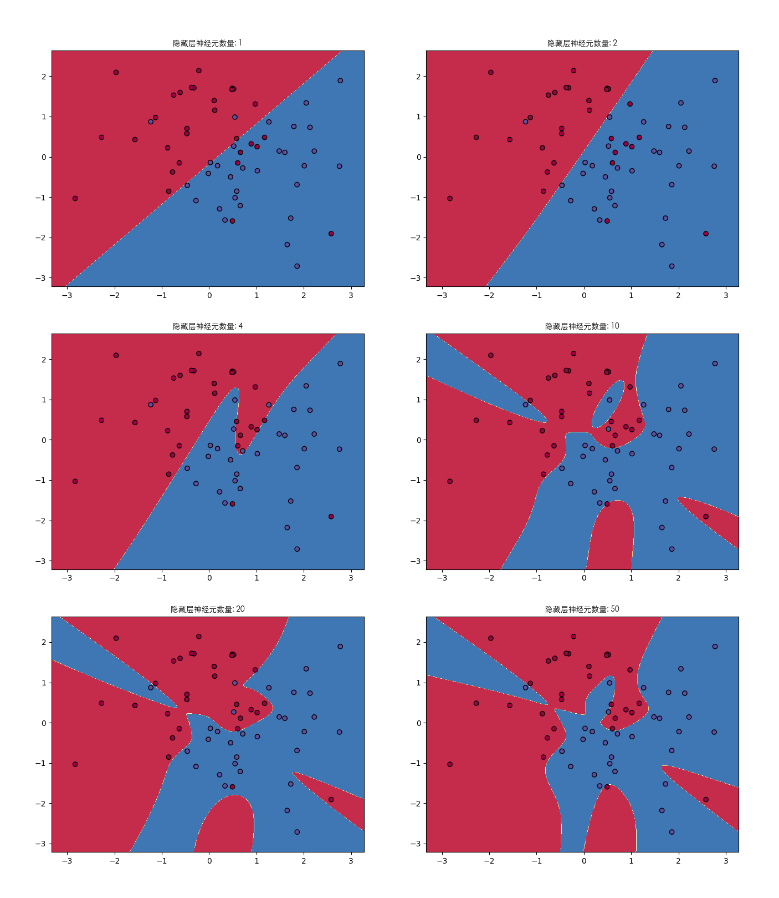
7. 没有结局
记住一点，bp神经网络是其他各种神经网络中最简单的一种。只有学会了它，才能以此为基础展开对其他更复杂的神经网络的学习。
虽然推导了并实现了算法，但是仍然是有很多疑问，这里就作为抛砖引玉吧：
- 神经网络的结构，即几层网络，输入输出怎么设计才最有效？
- 数学理论证明，三层的神经网络就能够以任意精度逼近任何非线性连续函数。那么为什么还需要有深度网络？
- 在不同应用场合下，激活函数怎么选择？
- 学习率怎么怎么选择？
- 训练次数设定多少训练出的模型效果更好？
AI，从入门到放弃，首篇结束。